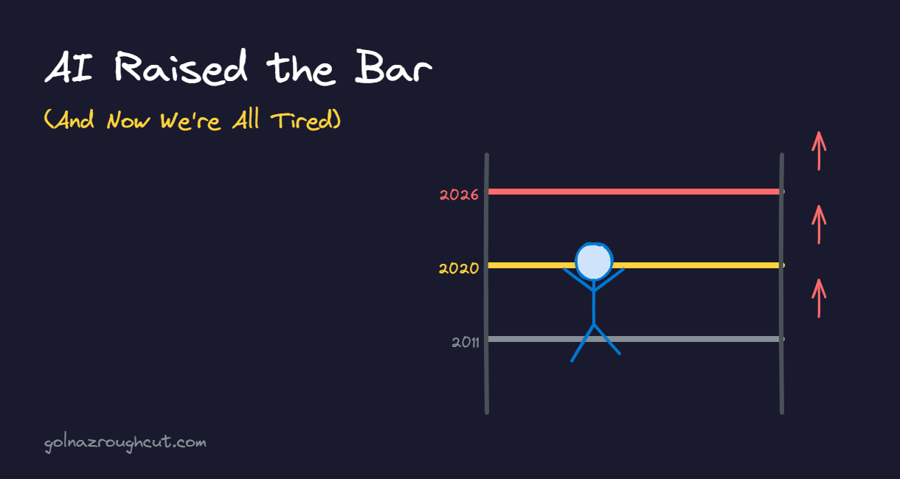

AI Raised the Bar (And Now We're All Tired)

Microsoft Build 2026 wrapped up about a month ago. If you missed it, you can catch up on all the sessions in the Build 2026 playlist on YouTube.
But this post isn't about what was announced. It's about what Build made me realize about how far expectations have come.
Fifteen Years Ago at Build
I remember Build from about 15 years ago. We had a colleague whose entire job after the event was to cut up all the session recordings, add titles and descriptions, and upload them to Channel 9.
That was his full-time role. For two weeks.
Just cutting, editing, uploading. Titles and descriptions. That was the whole deliverable. No chapter markers. No custom thumbnails. No fancy metadata. Just get the videos up.
Today's 24-Hour Window
Fast forward to Build 2026. The turnaround for session recordings? Twenty-four hours.
And the deliverables have exploded. We're not just uploading raw sessions anymore. We're shipping videos with:
- Chapter markers so viewers can jump to the section they care about
- Custom thumbnails designed for each session
- Rich metadata and descriptions
- Proper titles optimized for search
- Transcripts and captions
- Audio descriptions for accessibility
- Links to resources mentioned in the session
- Links to related sessions
All of that, in a day. Because that's what audiences expect now.
I say this as someone who works at an AI company and genuinely believes in what we're building: technology has compounded expectations over the years, and AI accelerated that significantly. That's not inherently bad. But it's real, and we need to talk about what it means for the people doing the work.
I Don't Want to Start at Zero
Here's another story from a few weeks back. An employee sent me a script. A paper script. Words on a page.
I pushed back.
I told them: I don't want to read a script. I want storyboards. I want multiple options. I want to see that you've thought through the visuals, not just the words.
And here's the thing: that's not me being difficult. That's my new baseline expectation.
I assume you will banter with your AI agent. I assume you will craft something, prototype it, iterate on it, get it to a place where it's worth anyone's time to review. I don't want to collaborate starting from zero. I want to collaborate starting from your best thinking, amplified by AI.
I think this is going to be the case across the board. If you bring me a blank canvas, I'll wonder why you didn't use the tools available to get it further before asking for my input.
And this goes both ways. As a manager, there's more expected of me too. I need to come to our conversations with new skills to share, relevant research papers, data and insights I've gathered. The bar for what I deliver to my team has risen just as much as what I expect from them. We're all operating at a higher baseline now.
The AI Fatigue Is Real
Here's the flip side. And it's important.
Because of all this, AI fatigue is real. You're constantly building. Expectations are sky-high. You're doing the work of what used to be multiple people. And it's exhausting.
This can lead to burnout. I'm seeing it. The research is starting to show it too.
Some reading on this: AI fatigue is real and nobody talks about it.
We need to be careful here. The tools are powerful, but sustainable pace still matters.
The Productivity Equation
Let's be clear about what's happening economically. Higher expectations plus more output equals productivity gains.
The question now is what we do with those productivity gains. More output? Or more balance? I'm hopeful the industry figures out how to deliver both.
Level Up or Get Left Behind
Here's my honest advice: if you're not already prototyping with AI, if you're not coming to conversations with something elevated, you're going to struggle.
That task that used to take you a few hours to analyze data? It should take you one hour now. And then you should wrap it up as a repeatable skill that you can run every week in a few minutes.
That's the new baseline. That's what's expected.
I really encourage you to explore these tools. Not because it's fun (though it can be), but because the bar has moved. The people who figure out how to work with AI effectively are going to pull ahead. The people who don't will find themselves spending twice the time to deliver half the output.
AI raised the bar. Now we all have to clear it.
Comments